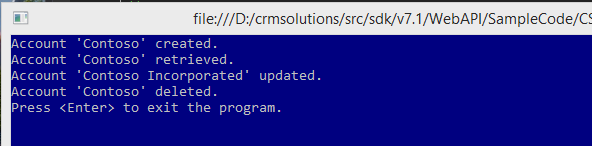

This sample demonstrates how to do basic CRUD operations (create, retrieve, update, and delete) using the Dynamics CRM web API using System.Net.Http.HttpClient without any helper libraries other than those to manage authentication and configuration. The Web API is available in the Dynamics CRM Online 2015 Update 1 release as a preview.
This sample cannot be run using an on-premises environment. See Microsoft Dynamics CRM Web API Preview for more information.
Pre-requisite : In order to run this sample you must first obtain a client ID and redirect URL as described in Register Application.
The BasicOperations program demonstrates sending CRUD requests to the Web API Preview web service and receiving a response for each request. The sample includes code to perform these tasks.
Access connection string and app registration information from an app.config file.
Authenticates the logged on user with the organization web service.
Invokes web methods to send CRUD requests to the web service.
Reads each response and handles any returned error.
Outputs a text message for each response indicating request processing success or failure to the console.
Makes use of helper code that implements common functionality required by the sample.
This sample employs an app.config file to store app registration values, service connection information, and optional user logon credentials. This is managed by the Configuration class that is provided as helper code. The format of the app.config file is shown below.
<connectionStrings>
<add name="preview" connectionString="Url=https://mydomain.crm.dynamics.com; Username=someone@mydomain.onmicrosoft.com; Password=password" />
</connectionStrings>
<appSettings>
<add key="ClientId" value="e5cf0024-a66a-4f16-85ce-99ba97a24bb2"/>
<add key="RedirectUrl" value="http://localhost/SdkSample"/>
</appSettings>
<connectionStrings> <add name="preview" connectionString="Url=https://mydomain.crm.dynamics.com; Username=someone@mydomain.onmicrosoft.com; Password=password" /> </connectionStrings> <appSettings> <add key="ClientId" value="e5cf0024-a66a-4f16-85ce-99ba97a24bb2"/> <add key="RedirectUrl" value="http://localhost/SdkSample"/> </appSettings>
For the ClientId and RedirectUrl values, use the values you obtain from the app registration process described in Register Application. You can reuse these values in multiple apps as long as it is for development and testing purposes. Once you are ready to publish an app to a store, you will need to obtain unique client ID and redirect URL values for your app.
The Main method of the program is show below. After instantiating the sample’s BasicOperations class, a Configuration object is created. If the name of a connection string is provide as the first argument on the command line, then that specific connection is used. Otherwise, the default Configuration constructor is called which uses the default connection string.
class BasicOperations
{
static public void Main(string[] args)
{
try
{
BasicOperations app = new BasicOperations();
// The first argument on the command line is the optional connection
// string name from the app.config file.
String[] arguments = Environment.GetCommandLineArgs();
// Create a configuration object to store the service URL and app
// registration settings.
Configuration config = null;
if (arguments.Length > 1)
config = new Configuration(arguments[1], arguments[0] + ".config");
else
config = new Configuration();
// Authenticate the user.
Authentication auth = new Authentication(config);
Task.WaitAll( Task.Run(async () => await app.Run(auth, config)));
}
catch (System.Exception ex) { DisplayException(ex); }
finally
{
Console.WriteLine("Press <Enter> to exit the program.");
Console.ReadLine();
}
}
class BasicOperations { static public void Main(string[] args) { try { BasicOperations app = new BasicOperations(); // The first argument on the command line is the optional connection // string name from the app.config file. String[] arguments = Environment.GetCommandLineArgs(); // Create a configuration object to store the service URL and app // registration settings. Configuration config = null; if (arguments.Length > 1) config = new Configuration(arguments[1], arguments[0] + ".config"); else config = new Configuration(); // Authenticate the user. Authentication auth = new Authentication(config); Task.WaitAll( Task.Run(async () => await app.Run(auth, config))); } catch (System.Exception ex) { DisplayException(ex); } finally { Console.WriteLine("Press <Enter> to exit the program."); Console.ReadLine(); } }
Next, an Authentication object is created with the configuration passed to it. The Authentication class uses the provided configuration information to authenticate the user and the app, which will happen later in the Run method. The sample then executes the Run method asynchronously.
The Authentication class is provided as helper code. For more information about authentication, see the topic Authenticate.
This sample uses the System.Net.Http.HttpClient class to manage sending requests to the CRM web service. The client object is configured with the SSL (https://) root address of the CRM server, as provided in the app.config file. This sample specifies a two minute timeout to allow for certain times where the CRM server is busy and cannot respond to our requests right away. The OData-MaxVersion and OData-Version headers specify the OData version that this code was written to use.
public async Task Run(Authentication auth, Configuration config)
{
try
{
using (HttpClient httpClient = new HttpClient())
{
httpClient.BaseAddress = new Uri(config.ServiceUrl);
httpClient.Timeout = new TimeSpan(0, 2, 0); // 2 minutes
httpClient.DefaultRequestHeaders.Add("OData-MaxVersion", "4.0");
httpClient.DefaultRequestHeaders.Add("OData-Version", "4.0");
public async Task Run(Authentication auth, Configuration config) { try { using (HttpClient httpClient = new HttpClient()) { httpClient.BaseAddress = new Uri(config.ServiceUrl); httpClient.Timeout = new TimeSpan(0, 2, 0); // 2 minutes httpClient.DefaultRequestHeaders.Add("OData-MaxVersion", "4.0"); httpClient.DefaultRequestHeaders.Add("OData-Version", "4.0");
The code to create an account entity is shown below. A local in-memory Account object is created and its properties are populated with some values. A simple Account class is defined elsewhere in the sample code and just contains the two properties shown. Another method of defining an entity is to create the entity dynamically as a JObject, which is demonstrated in a later section of this topic. You can add any supported entity properties. The properties available using the web API preview are define within the metadata document. See Web API preview types, functions and actions for information about how you can understand which properties are available.
Account account = new Account();
account.name = "Contoso";
account.telephone1 = "555-5555";
httpClient.DefaultRequestHeaders.Authorization =
new AuthenticationHeaderValue("Bearer", auth.AcquireToken().AccessToken);
// POST api/data/accounts
HttpResponseMessage response =
await HttpClientExtensions.SendAsJsonAsync<Account>(httpClient,
HttpMethod.Post, "api/data/accounts", account);
if (response.IsSuccessStatusCode)
Console.WriteLine("Account '{0}' created.", account.name);
else
throw new Exception(String.Format(
"Failed to create account '{0}', reason is '{1}'.",
account.name, response.ReasonPhrase),
new CrmHttpResponseException(response.Content));
Account account = new Account(); account.name = "Contoso"; account.telephone1 = "555-5555"; httpClient.DefaultRequestHeaders.Authorization = new AuthenticationHeaderValue("Bearer", auth.AcquireToken().AccessToken); // POST api/data/accounts HttpResponseMessage response = await HttpClientExtensions.SendAsJsonAsync<Account>(httpClient, HttpMethod.Post, "api/data/accounts", account); if (response.IsSuccessStatusCode) Console.WriteLine("Account '{0}' created.", account.name); else throw new Exception(String.Format( "Failed to create account '{0}', reason is '{1}'.", account.name, response.ReasonPhrase), new CrmHttpResponseException(response.Content));
The code sets the default Authorization header with the OAuth 2.0 access token. The web service employs an OAuth identity provider that requires a bearer access token to authorize the logged on user to perform a web service operation.
Next, the code sends an HTTP POST message request to the accounts collection (api/data/accounts). The content of that request is a serialized JSON payload of our in-memory Account object. The response is checked for any errors, which are packaged into a custom exception and eventually output to the console. If the operation was successful, the response returns a status code of 204 (No Content) and contains a URI of the new account entity in the OData-EntityId header. For more information on creating an entity see Create an entity.
This next section of code retrieves the account entity that we just created in the CRM database and populates an in-memory Account object with the account’s data as retrieved from the web service.
httpClient.DefaultRequestHeaders.Authorization =
new AuthenticationHeaderValue("Bearer", auth.AcquireToken().AccessToken);
// GET api/data/accounts(<guid>)?$select=name,telephone1
string accountUri = response.Headers.GetValues("OData-EntityId").FirstOrDefault();
var retrieveResponse = await httpClient.GetAsync(accountUri +
"?$select=name,telephone1");
Account retrievedAccount = null;
if (retrieveResponse.IsSuccessStatusCode)
{
retrievedAccount = JsonConvert.DeserializeObject<Account>(await retrieveResponse.Content.ReadAsStringAsync());
Console.WriteLine("Account '{0}' retrieved.", retrievedAccount.name);
}
else
throw new Exception(
String.Format("Failed to retrieve the account, reason is '{0}'.",
retrieveResponse.ReasonPhrase),
new CrmHttpResponseException(response.Content));
httpClient.DefaultRequestHeaders.Authorization = new AuthenticationHeaderValue("Bearer", auth.AcquireToken().AccessToken); // GET api/data/accounts(<guid>)?$select=name,telephone1 string accountUri = response.Headers.GetValues("OData-EntityId").FirstOrDefault(); var retrieveResponse = await httpClient.GetAsync(accountUri + "?$select=name,telephone1"); Account retrievedAccount = null; if (retrieveResponse.IsSuccessStatusCode) { retrievedAccount = JsonConvert.DeserializeObject<Account>(await retrieveResponse.Content.ReadAsStringAsync()); Console.WriteLine("Account '{0}' retrieved.", retrievedAccount.name); } else throw new Exception( String.Format("Failed to retrieve the account, reason is '{0}'.", retrieveResponse.ReasonPhrase), new CrmHttpResponseException(response.Content));
After checking for a successful response, the account entity data is then read from the response content and converted into an in-memory Account object.
For more information on retrieving an entity see Retrieve an entity.
Now let’s update a property of the account entity. To update the name property of the account entity, the sample first dynamically creates a JSON JObject containing a “name” property and value instead of using the static Account class. This was done to show an alternate technique. The code then sends a PATCH request to the web service, identifying the account entity by its URI, and providing the updated account data.
httpClient.DefaultRequestHeaders.Authorization =
new AuthenticationHeaderValue("Bearer", auth.AcquireToken().AccessToken);
JObject accountToUpdate = new JObject();
accountToUpdate.Add("name", retrievedAccount.name + " Incorporated");
// PATCH api/data/acounts(<guid>)
response = await HttpClientExtensions.SendAsJsonAsync<JObject>(
httpClient, new HttpMethod("PATCH"), accountUri, accountToUpdate);
if (response.IsSuccessStatusCode)
Console.WriteLine("Account '{0}' updated.", accountToUpdate["name"]);
else
throw new Exception(
String.Format(
"Failed to update account '{0}', reason is '{1}'.",
retrievedAccount.name, response.ReasonPhrase),
new CrmHttpResponseException(response.Content));
httpClient.DefaultRequestHeaders.Authorization = new AuthenticationHeaderValue("Bearer", auth.AcquireToken().AccessToken); JObject accountToUpdate = new JObject(); accountToUpdate.Add("name", retrievedAccount.name + " Incorporated"); // PATCH api/data/acounts(<guid>) response = await HttpClientExtensions.SendAsJsonAsync<JObject>( httpClient, new HttpMethod("PATCH"), accountUri, accountToUpdate); if (response.IsSuccessStatusCode) Console.WriteLine("Account '{0}' updated.", accountToUpdate["name"]); else throw new Exception( String.Format( "Failed to update account '{0}', reason is '{1}'.", retrievedAccount.name, response.ReasonPhrase), new CrmHttpResponseException(response.Content));
For more information about updating an entity, see Update, upsert, or delete entities.
To delete an entity, send a DELETE message request specifying the entity URI.
httpClient.DefaultRequestHeaders.Authorization =
new AuthenticationHeaderValue("Bearer", auth.AcquireToken().AccessToken);
// DELETE api/data/accounts(<guid>)
response = await httpClient.DeleteAsync(accountUri);
if (response.IsSuccessStatusCode)
Console.WriteLine("Account '{0}' deleted.", retrievedAccount.name);
else
throw new Exception(
String.Format(
"Failed to delete account '{0}', reason is '{1}'.", retrievedAccount.name,
response.ReasonPhrase), new CrmHttpResponseException(response.Content));
httpClient.DefaultRequestHeaders.Authorization = new AuthenticationHeaderValue("Bearer", auth.AcquireToken().AccessToken); // DELETE api/data/accounts(<guid>) response = await httpClient.DeleteAsync(accountUri); if (response.IsSuccessStatusCode) Console.WriteLine("Account '{0}' deleted.", retrievedAccount.name); else throw new Exception( String.Format( "Failed to delete account '{0}', reason is '{1}'.", retrievedAccount.name, response.ReasonPhrase), new CrmHttpResponseException(response.Content));
To build and run the sample, follow these steps.
Download the sample, and then load the provided solution file in the C# folder into Visual Studio.
Change the connectionString, ClientId, and RedirectUrl values in the app.config file as appropriate for your Azure Active Directory app registration and CRM organization service.
Press F5 to build and run the program. During the build, the Json.NET NuGet package will be automatically installed into your project. This requires that your development computer be connected to the internet at the time of the build.
You will be prompted by ADAL to enter your CRM username and password if they have not been provided in the app.config file or the values provided are incorrect. For a CRM Online tenant provisioned through Office 365, your username would be something similar to someone@mydomain.crm.dynamics.com.
You may be prompted by Azure to accept app access to your CRM organization’s data.
When run, the console output that you will see is shown below.
